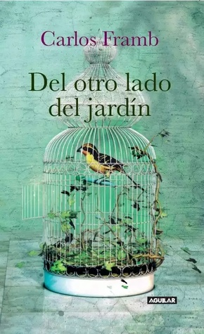

Del Otro Lado Del Jardín
Reseña por Jorge I. Zuluaga

Ver reseña en GoodReads (necesita cuenta)
¿Por dónde comenzar a describir las emociones que me ha producido y las reflexiones que desencadenó en mí la lectura de esta obra?
Comencemos por el tema central de esta crónica: el suicidio.
En nuestra cultura, profundamente contaminada por las retrógradas ideas del cristianismo medieval (que creímos superar con el liberalismo y la información de la modernidad, pero que en realidad siguen enquistadas profundamente), al suicidio o a la eutanasia siempre los ha rodeado una innoble atmósfera de tabú inmenable, de tema prohibido, de atentado contra la "sacrosanta" vida, de pecado mortal, de acto diabólico y otra sarta de pendejadas irrepetibles.
Es por eso que este conmovedor ensayo autobiográfico del gran Carlos Framb llegó, al menos para mí, como una fresca brisa literaria y filosófica que arrastra reflexiones claras sobre el tema y lo hace en consonancia con quienes, como yo, pensamos distinto sobre el inalienable derecho que tenemos todas las personas a terminar cuando queramos con nuestras vidas y hacerlo, ojalá, sin violencias, sin drama (aunque no lo será mientras el cristianismo siga siendo la fuente última de moralidad).
Yo de verdad le agradezco a Carlos por ahondar en el tema y dar, con su conmovedora historia de vida, un ejemplo del innecesario conflicto social y legal que existe alrededor de este importante derecho.
Vamos ahora a por el texto.
Como seguramente sabrán por la descripción y la contraportada, "Del otro lado del jardín" es una crónica del poeta colombiano Carlos Framb y de su familia, contada en primera persona y centrada en uno de los más conmovedores y, a la larga, increíbles episodios de su vida: la eutanasia de su madre.
No quiero arruinar con esta reseña ninguna sorpresa de una historia que me enganchó desde la primera página, pero solo quiero agregar que lo vivido por Carlos —por un lado las pérdidas familiares, la enfermedad de su madre y las situaciones que vivió durante y después de su eutanasia— vale la pena leerse.
Como ya lo expresé antes, en el corazón de este ensayo/crónica/novela (¿en qué género literario debería catalogarse?), se encuentra el suicidio, la muerte voluntaria (que es el eufemismo que usamos para referirnos a él), la eutanasia (su bello nombre en griego) de doña Luzmila Salvador, su madre. Carlos ha tenido en este texto la valentía, como autor, de escribir abiertamente sobre lo que no muchos se atreven y lo que lamentablemente su amigo y maestro Ebel Botero no pudo terminar en vida: una breve historia del suicidio. Aunque corto, su historia del suicidio es realmente ilustrativa y erudita; a mí, por lo menos, me dejó con muchos elementos históricos y filosóficos que me permitirán hablar y argumentar con mejores elementos cuando llegue la hora de conversar con familiares y amigos de este tema tabú.
El libro no solo tiene un gran valor como obra literaria. Está bellamente escrito; tiene pasajes en los que emerge el gran poeta que es Framb y logra tejer un relato conmovedor y sentido de lo que es una familia tradicional antioqueña: es decir, con raíces en el que es hoy un municipio periférico (aunque en su momento fue un municipio de gran importancia en Antioquia, Sonsón), vida en el campo, problemáticas familiares (alcoholismo, madres sobreprotectoras, padres autoritarios), amor filial y mucha religiosidad.
Además de su valor literario, "Del otro lado del jardín" tiene un gran valor como crónica. Sus descripciones pormenorizadas de los eventos que rodearon la eutanasia de su madre y el posterior proceso judicial al que fue sometido son impresionantemente detalladas. Algunas personas tal vez las encontrarán demasiado pormenorizadas para una lectura como esta. Yo, sin embargo, aprecié mucho que Carlos llegara a ese nivel de detalle para mostrarnos un poco los entresijos de la justicia y de cómo opera —u operaba, pues los eventos tuvieron lugar hace casi 10 años y nueva legislación al respecto ha sido escrita en Colombia— el sistema judicial en nuestro país en temas de suicidio y eutanasia.
Antes de leer el libro, admiraba a Carlos como poeta (conocí sus poesías a través de los epígrafes de los libros del maestro Alonso Sepúlveda y solo hasta hace poco me sumergí de lleno en sus obras poéticas, *Antinoo* y *Un día en el paraíso*).
Después de leerlo, lo admiro muchísimo más y de una manera más integral.
De nuevo, ¡gracias, Carlos!